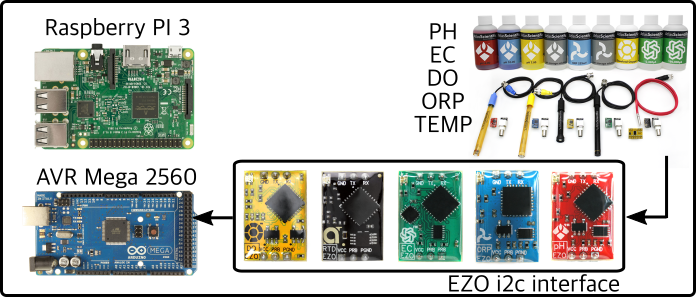

Q4 Water Quality Monitoring Recorder

[ About ]
Water Quality Monitoring System: This project intends to interface the Atlas-Scientific ENV-SDS water quality probe kit to an AVR MEGA 2560 micro-cpu via an i2C serial interface and provide real-time water quality readings.
[ Features ]
- Probe data consists of PH, EC, DO, ORP and Temperature.
- Data will be accessible via a USB interface connection to a Raspberry PI 3 and/or via a RESTful API server running on the AVR brodcasting over WiFi.
- Data readings will be displayed in real-time on a NodeJS instance running on the Raspberry device and logged to a database.
[ Stretch ]
- Interface Biorock power supply unit.
- Voltage and current sensing.
- PID controler to regulate current.
- PID reacts to EC level.
- Ambient environmental sensing and positioning
Arduino C
Node backend
Express
Couch dB
Knex
Bootstrap
Angular 2
TypeScript
AVR Mega 2560
Raspbery PI 3
Atlas Scientific EZO:
PH
EC
DO
ORP
PT-1000